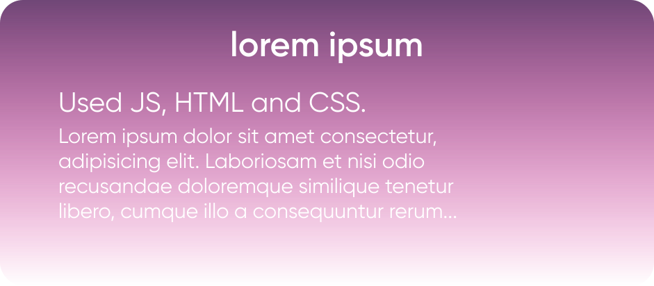

Mikita Ruchai
Beginner FE Developer
ABOUT ME
I’m 15 years old belarus pupil. One time I have learnt about programming and then understood that I want to become game developer, but finally I’m trying to become frontend developer
SOFT SKILLS
- Communicability
- Purposefulness
- Team work
HARD SKILLS
- HTML, CSS
- JS (basic)
- Git, Github
- English (A2)
EDUCATION
Junior High School
01.09.21 – 05.31.2023
RS School
01.09.21 – unknown
PROJECTS
CODE
let n = 10;
nextPrime:
for (let i = 2; i <= n; i++) {
for (let j = 2; j < i; j++) {
if (i % j == 0) continue nextPrime
}
alert( i );
}